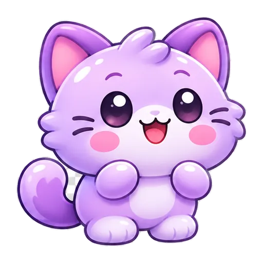
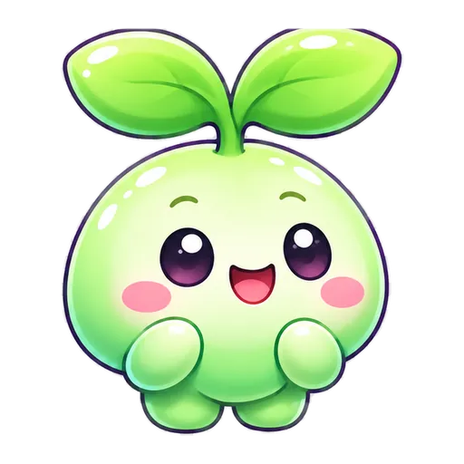

OneLife · 4 bạn nhỏ mới
Glossy Kawaii V2 – gallery duyệt ảnh master có thật từ repository. Không có animation nào của 4 nhân vật này được nhận là đã hoàn tất.

Mèo Tím
Master ứng viên · Chưa animation
Cún Cam
Master ứng viên · Chưa animation
Robot Xanh
Master ứng viên · Chưa animation

Mầm Xanh
Master ứng viên · Chưa animation
Nguồn 512px RGBA WebP trên main. Trước khi phát triển animation: duyệt bóng đổ, biên trong suốt, cỡ 64px, định dạng quyền sử dụng và hình mẫu. Xem đặc tả kỹ thuật.